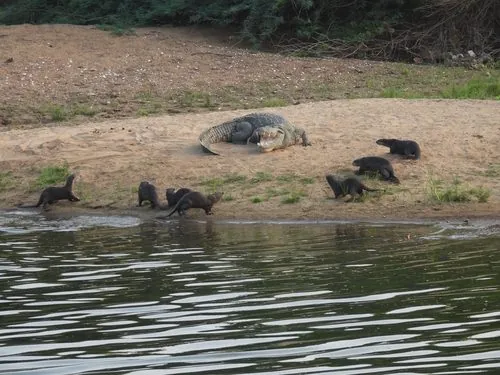

爬行动物 · 动物界
泽鳄 Crocodylus palustris

南亚次大陆的宽吻鳄类，吻部厚实如靴、适应静水沼泽与水库，能在人工水体中与人共存，是印度分布最广的鳄类。
- 分类
- 门脊索动物门纲爬行纲目鳄目科鳄科属鳄属
- 栖息环境
- 沼泽、湖泊、水库、灌溉渠、缓流河道与河口静水区
- 地理分布
- 印度、斯里兰卡、巴基斯坦、尼泊尔、孟加拉国与伊朗东南部
- 保护级别
- IUCN 易危（VU）；CITES 附录Ⅰ
物种志
泽鳄是中等体型的鳄类，雄性全长可达 4–5 米，雌性约 2.5–3 米，体重 100–450 千克。吻部宽厚而钝圆，形似一只倒扣的靴子，是与吻部尖细的恒河鳄最直观的区别；背部鳞甲发达，体色灰褐至深橄榄色，幼体色浅并带黑色横斑。四肢粗壮，尾侧扁，可在陆地上以较快的速度短距离冲刺。
泽鳄广布于印度、斯里兰卡、巴基斯坦、尼泊尔与伊朗东南部，栖息于沼泽、湖泊、水库、灌溉渠与缓流河道，对人工水体适应良好，常在水库岸边晒太阳。食性广泛，捕食鱼、蛙、龟、水鸟、蛇、小型哺乳动物与腐肉。每年 11 月至次年 2 月筑巢，每窝 25–40 枚卵，孵化期约 50–75 天，雌鳄会守巢并帮助幼鳄破壳。它是印度分布最广的鳄类，但因皮革贸易、捕杀与渔网误捕，整体数量在二十世纪大幅下降，现列为易危。
形态与习性
- 全长雄性可达 4–5 m，雌性约 2.5–3 m
- 体重约 100–450 kg
- 食性鱼、蛙、龟、水鸟、蛇、小型哺乳动物与腐肉
- 繁殖11 月至次年 2 月筑巢，每窝 25–40 枚卵
- 孵化约 50–75 天，雌鳄守巢并帮助幼鳄破壳
- 识别特征吻部宽厚钝圆，形似一只倒扣的靴子
- 种群现状全球野生个体估计数千至一万余条，局部恢复
趣味知识
- 泽鳄的吻部又宽又厚，侧面看像一只翻过来的靴子。
- 它很能适应人工环境，常年在印度乡村的水库和灌溉渠里生活。
- 幼鳄破壳时会发出叫声，母鳄用嘴轻轻把它们衔到水边。